Grand Tunis
The Living Capital
Tunis is the vibrant capital of Tunisia, where ancient history meets modern life.
The city combines the charm of its UNESCO-listed medina with contemporary neighborhoods, cultural institutions, and seaside cafés, making it a dynamic gateway to the country.
~1.1 million inhabitants
212 km²
- Medina of Tunis (UNESCO)
- Zitouna Mosque
- Bardo National Museum
- Avenue Habib Bourguiba
- Sidi Bou Said
- Lablabi
- Brik with egg
- Traditional couscous
Bizerte
The Mediterranean Gateway


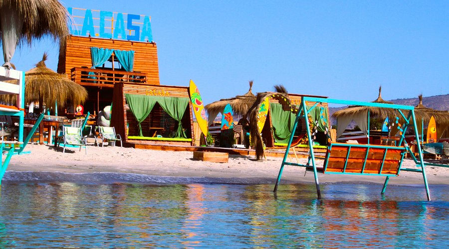
Bizerte is Tunisia’s northernmost governorate, overlooking the Mediterranean Sea.
Known for its old port, beautiful beaches, and rich maritime heritage, Bizerte offers a peaceful blend of nature, history, and coastal life.
~568,000 inhabitants
3,750 km²
- Old Port of Bizerte
- Fort of Spain
- Remel Beach
- Cap Blanc (northernmost point of Africa)
- Fresh grilled fish
- Seafood couscous
- Chakchouka
- Traditional Mediterranean dishes
Nabeul
Capital of Pottery and Seaside Resorts


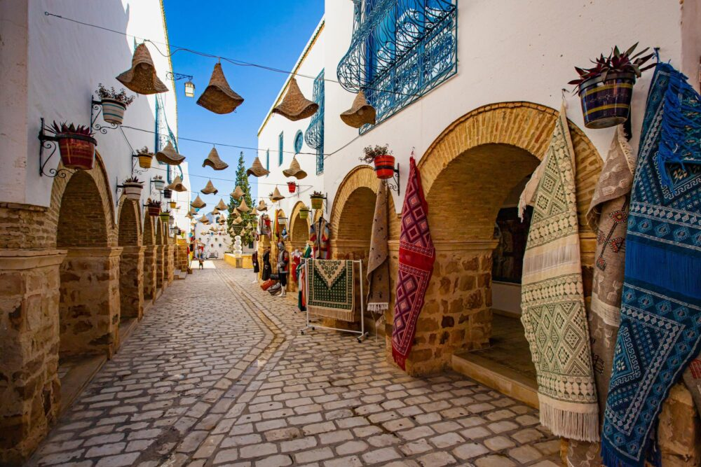
Nabeul is renowned for its traditional pottery, colorful markets, and popular seaside towns. It is a major tourist hub combining craftsmanship, beaches, and Punic history.
~787,000 inhabitants
2,788 km²
- Nabeul Friday Market
- Hammamet beaches and medina
- Kelibia fortress
- Kerkouane (Punic site – UNESCO)
- Harissa of Nabeul
- Fresh seafood
- Traditional pastries
Siliana
Land of Wheat and Ruins

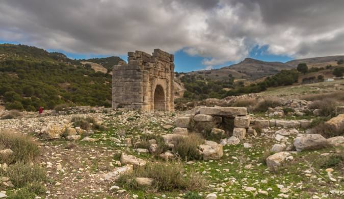
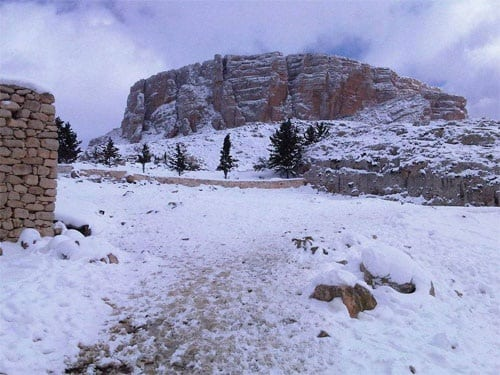
Siliana is a rural governorate known for cereal farming, Roman heritage, and seasonal landscapes. Snow can even appear in winter, giving it a unique character in Tunisia.
~223,000 inhabitants
4,631 km²
- Makthar archaeological site
- Roman temples and theaters
- Agricultural plains
- Dams and countryside landscapes
- Traditional couscous
- Dairy products
- Homemade bread and rural specialties
Zaghouan
The Mountain of Water
Zaghouan is famous for its natural springs and Roman hydraulic heritage. Its mountainous terrain and green surroundings make it a refreshing destination close to the capital.
~176,000 inhabitants
2,768 km²
- Temple of Water
- Roman aqueduct to Carthage
- Mount Zaghouan
- Thermal springs
- Couscous with vegetables
- Olive oil
- Mountain farm products
Béja
The Granary of Tunisia

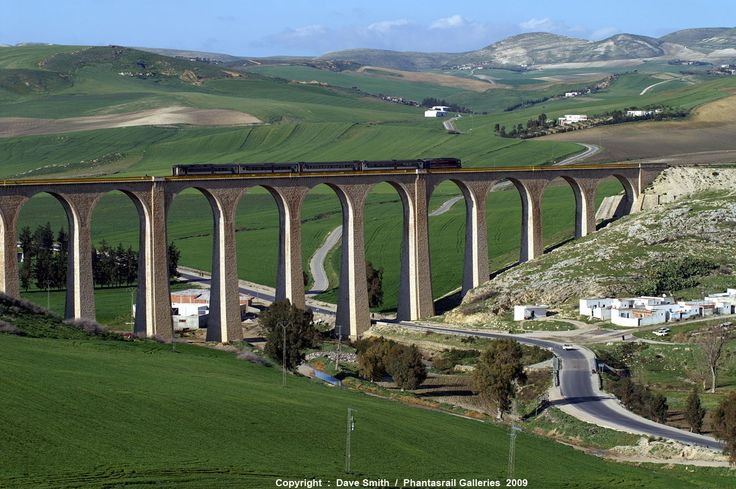
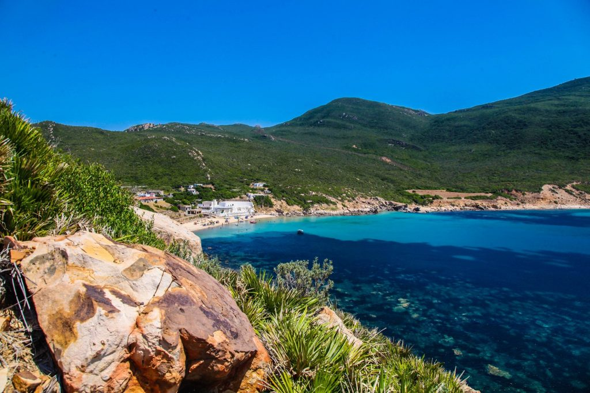
Béja is one of Tunisia’s most fertile regions, famous for its agricultural wealth and ancient Roman heritage. Rolling hills, forests, and archaeological sites make it a quiet yet historically rich destination.
~303,000 inhabitants
3,740 km²
- Dougga (UNESCO World Heritage Site)
- Béja Kasbah
- Roman ruins and bridges
- Forests and mountain landscapes
- Couscous berbère
- Olive oil
- Farm products and homemade bread
Jendouba
The Green North
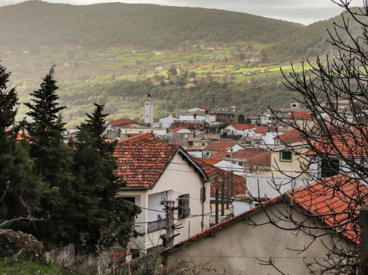
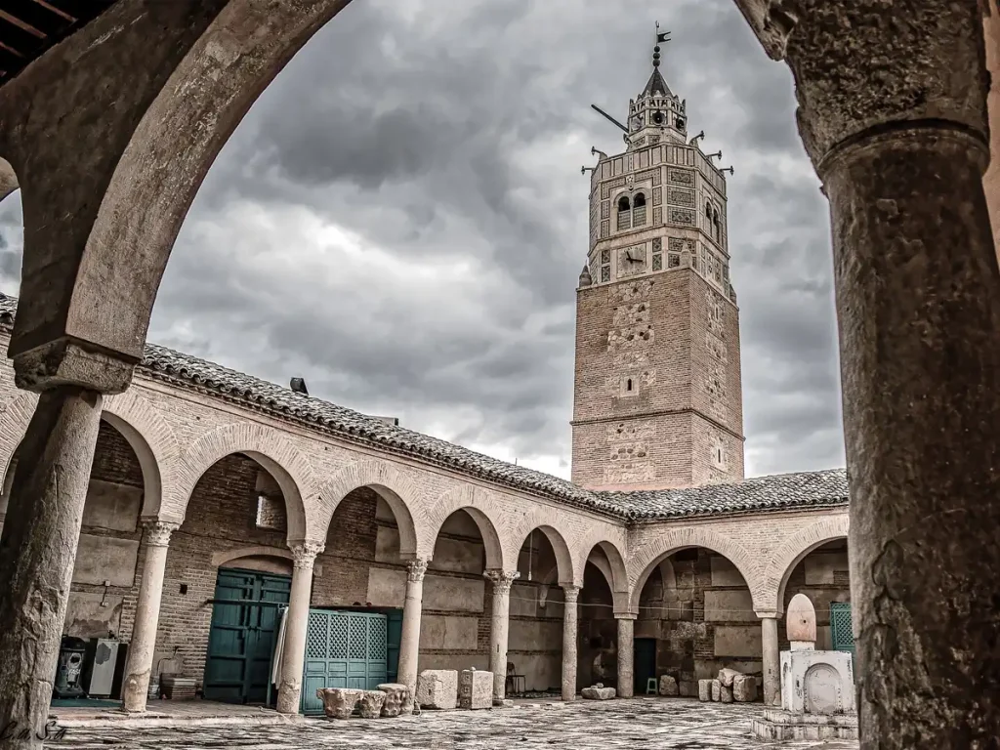

Jendouba is Tunisia’s greenest governorate, covered with forests, mountains, and rivers. It is ideal for nature lovers and history enthusiasts, offering a cooler climate and outstanding Roman sites.
~401,000 inhabitants
3,102 km²
- Bulla Regia (underground Roman houses)
- Aïn Draham mountain resort
- Tabarka (coral coast and jazz festival)
- Kroumirie forests
- Forest style couscous
- Wild mushrooms
- Mountain honey
- Gamebased traditional dishes
Le Kef
City of Heights and History
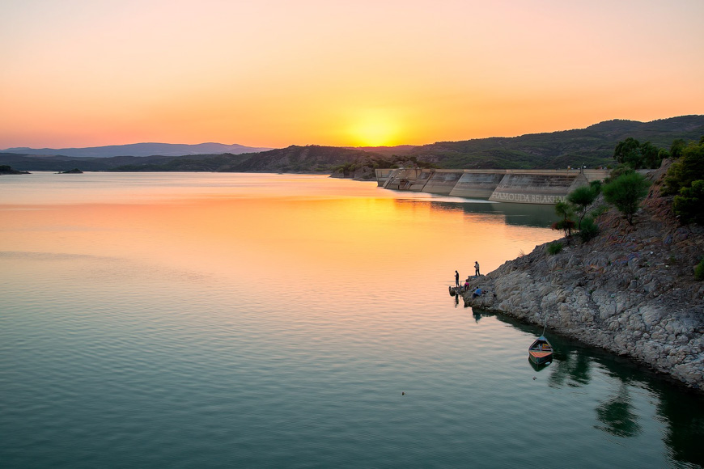


Kef is a historic mountain governorate offering panoramic views, fortified architecture, and deep Numidian and Roman roots.
It is one of Tunisia’s most authentic inland destinations.
~243,000 inhabitants
4,965 km²
- Kef Kasbah
- Table of Jugurtha
- Numidian archaeological sites
- Regional museum
- Berber couscous
- Mountain-style meat dishes
- Traditional farmhouse cheese
Kairouan
Spiritual Heart of Tunisia
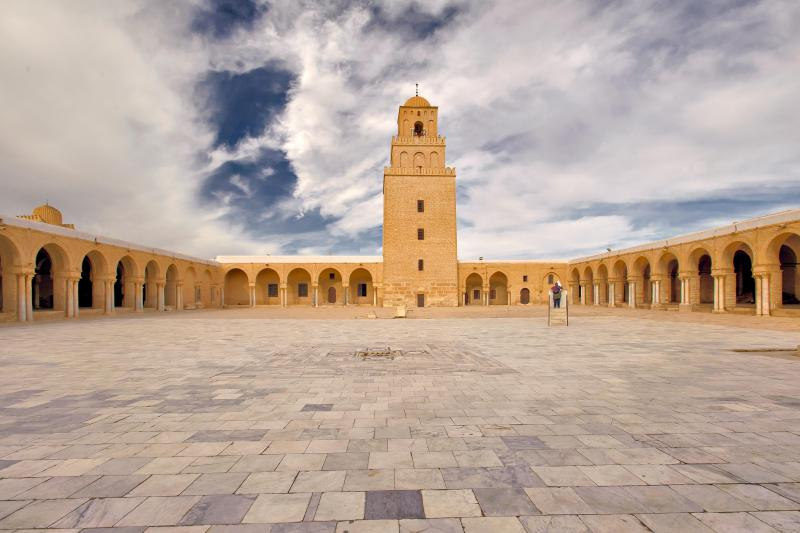
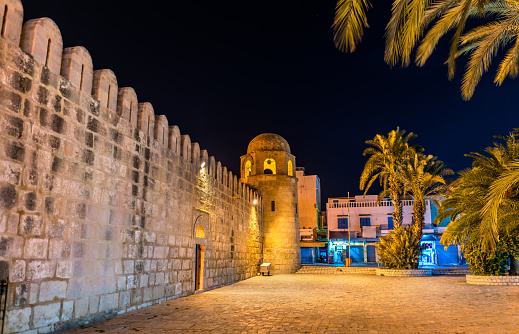

Kairouan is one of the most important religious and historical cities in the Islamic world.
Founded in the 7th century, it played a central role in the spread of Islam in North Africa and remains a major cultural and spiritual destination.
~570,000 inhabitants
6,712 km²
- Great Mosque of Kairouan (Uqba Ibn Nafi Mosque)
- Aghlabid Basins
- Mausoleum of Sidi Sahbi (Barber’s Mosque)
- Medina of Kairouan (UNESCO)
- Traditional carpet workshops
- Makroudh
- Kaak Warka
- Traditional couscous
Kasserine
Mountains and Roman Heritage
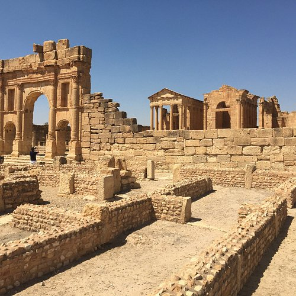
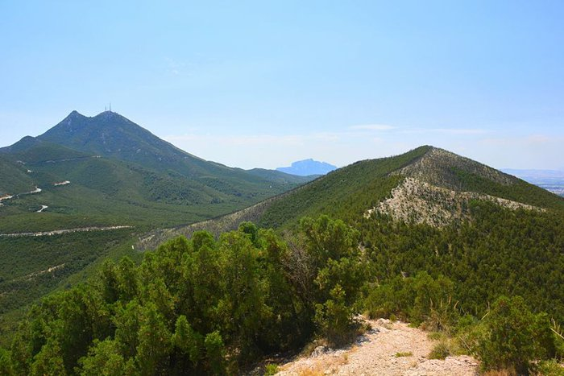
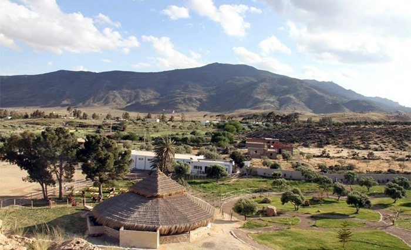
Kasserine is a mountainous governorate known for its dramatic landscapes, ancient Roman cities, and strong cultural identity.
It is home to Tunisia’s highest peak and offers rich archaeological and natural heritage.
~439,000 inhabitants
8,066 km²
- Mount Chambi (Tunisia’s highest point – National Park)
- Sbeitla (ancient Roman city of Sufetula)
- Mountain forests and hiking areas
- Traditional villages and local markets
- Couscous with wild herbs
- Grilled meats
- Traditional dairy products (lben)
- Rural mountain dishes
Sidi Bouzid
Agricultural Heartland
Sidi Bouzid is an agricultural governorate known for its fertile plains and central role in Tunisia’s contemporary history.
~430,000 inhabitants
7,405 km²
- MBouhedma National Park
- Agricultural markets and rural landscapes
- Local monuments linked to modern Tunisian history
- Traditional villages
- Local cereals and agricultural products
- Lben
- Simple rural dishes
Sousse
The Pearl of the Sahel
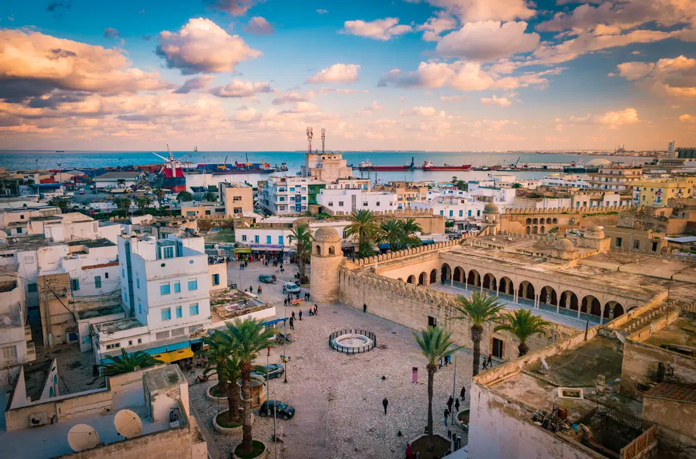

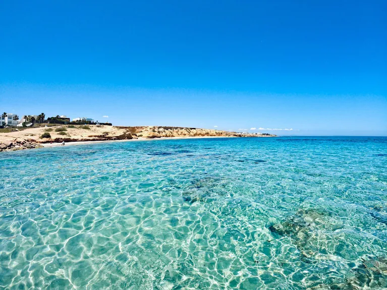
Sousse is one of Tunisia’s most popular coastal destinations, combining a rich historical heritage with a lively seaside atmosphere.
Its UNESCO-listed medina stands alongside modern resorts, making it a key hub for culture and tourism.
~675,000 inhabitants
2,669 km²
- Ribat of Sousse
- Archaeological Museum of Sousse
- Port El Kantaoui marina
- Sandy Mediterranean beaches
- Fresh seafood dishes
- Brik
- Ftayer
Monastir
History by the Sea

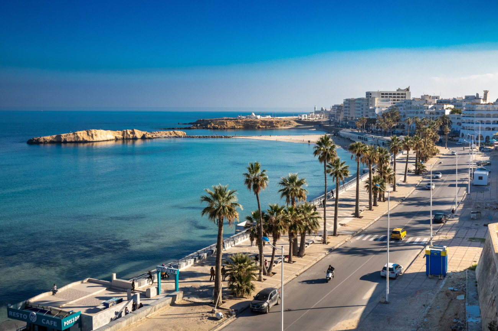
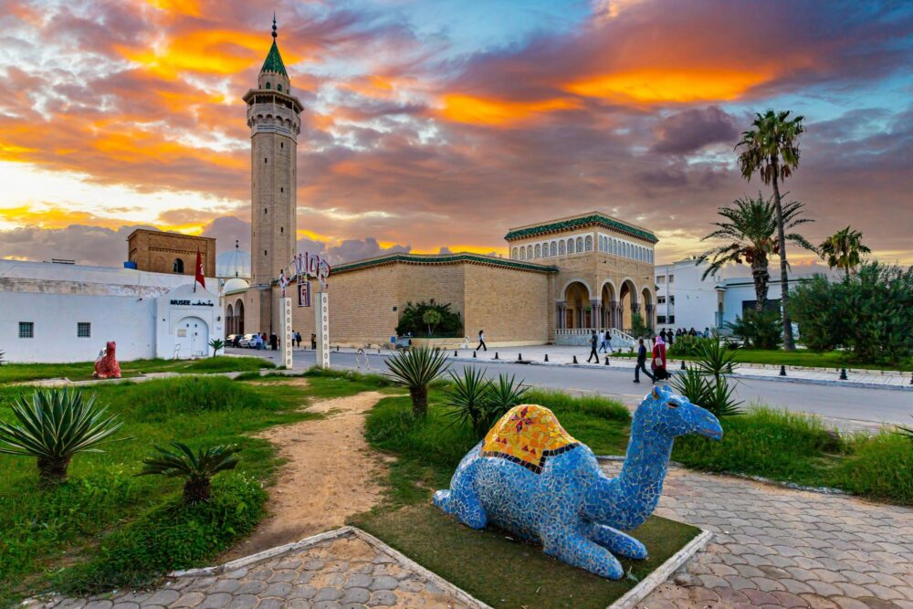
Monastir is a coastal governorate known for its elegant seaside views, historical monuments, and relaxed atmosphere.
It played an important role in Tunisia’s modern history and remains a refined tourist destination.
~549,000 inhabitants
1,024 km²
- Ribat of Monastir
- Mausoleum of Habib Bourguiba
- Monastir Marina
- Kuriat Islands (nature reserve)
- Coastal promenades
- Grilled fish
- Masfouf
- Zrir
Mahdia
The Fatimid Coastal City
Mahdia is a historic coastal city founded by the Fatimids in the 10th century.
Known for its white houses, fishing port, and pristine beaches, Mahdia offers an authentic and peaceful seaside experience.
410,812 habitants
2,966 km²
- Fatimid Great Mosque of Mahdia
- Cap Africa (easternmost point of Tunisia)
- Old port and medina
- El Jem Amphitheatre (nearby – UNESCO)
- Fine sandy beaches
- Brik Mahdia
- Stuffed sardines
- Fish couscous
- Chapati Mahdia
Sfax
Economic Capital of the South

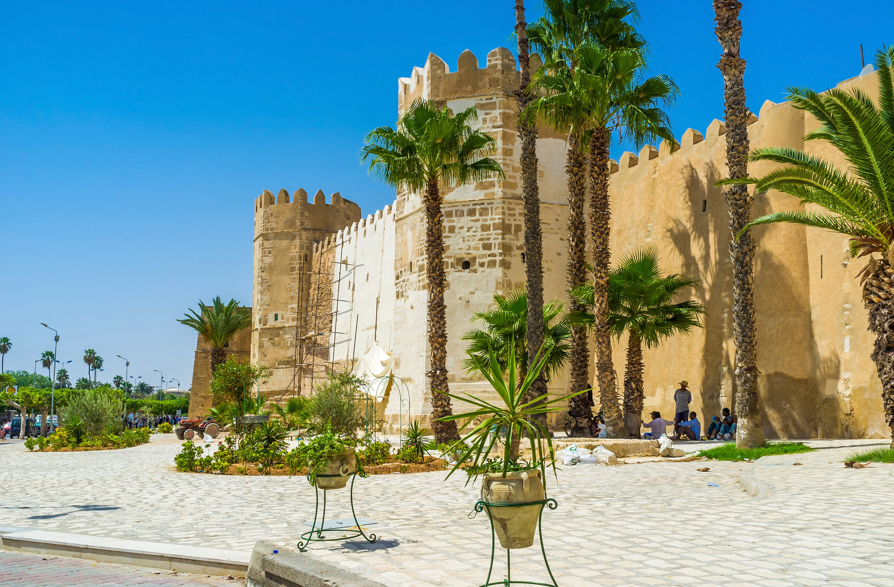

Sfax is Tunisia’s second-largest city and a major economic and industrial center.
Its fortified medina, strong commercial culture, and proximity to the Kerkennah Islands give it a distinct identity rooted in work, tradition, and the sea.
~955,000 inhabitants
7,545 km²
- Medina of Sfax (fortified historic center)
- Archaeological Museum of Sfax
- Kerkennah Islands
- Traditional souks
- Vegetable couscous
- Charmoula
- Bazinne
Gabès
The Mediterranean Oasis
Gabès is unique in the Mediterranean world for having a coastal oasis.
It blends palm groves, sea views, and traditional markets, creating a rare natural and cultural landscape.
~374,000 inhabitants
7,166 km²
- Gabès Oasis
- Spice and henna markets
- Coastal promenade
- Nearby Berber villages
- Date-based couscous
- Dried fish
- Bsissa
Médenine
Berber Heritage and Desert Architecture
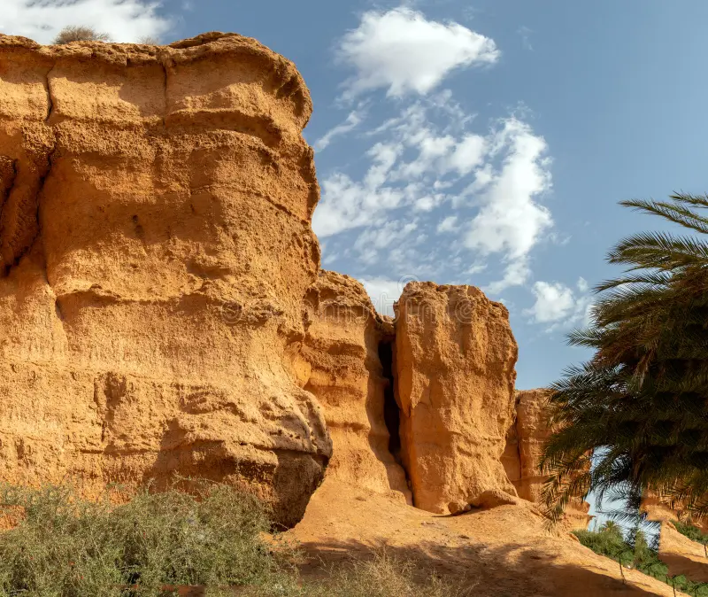
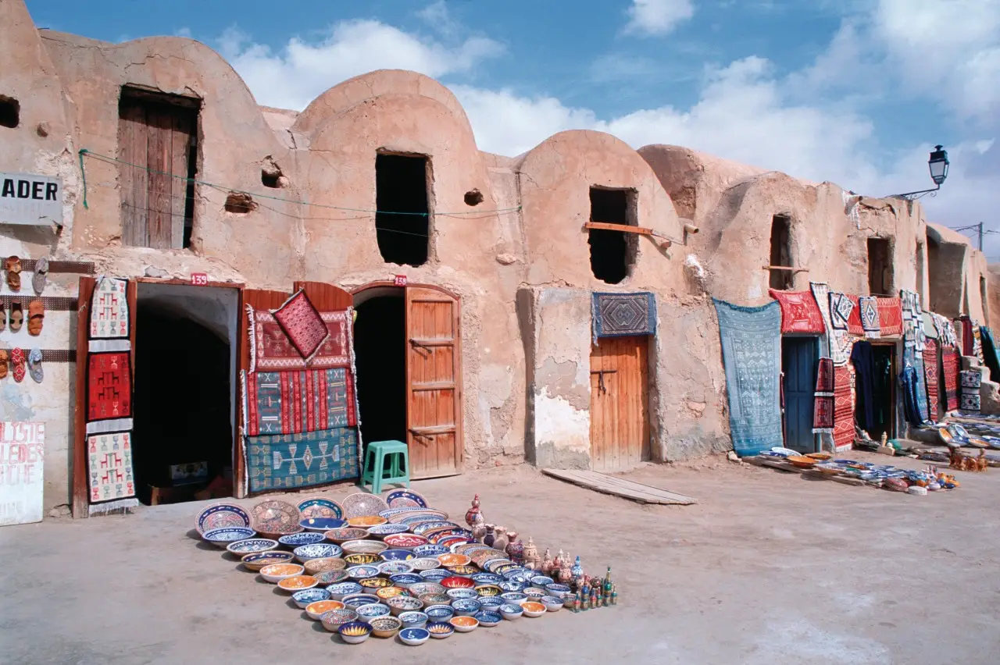

Médenine is known for its Berber ksour (fortified granaries) and desert architecture.
It serves as a cultural crossroads between the Sahara and the Mediterranean.
~480,000 inhabitants
8,588 km²
- Ksar Ouled Soltane
- Ksar Hallouf
- Berber villages
- Traditional ksour architecture
- Berber couscous
- Camel meat dishes
- Traditional flatbread
Djerba
The Island of Dreams

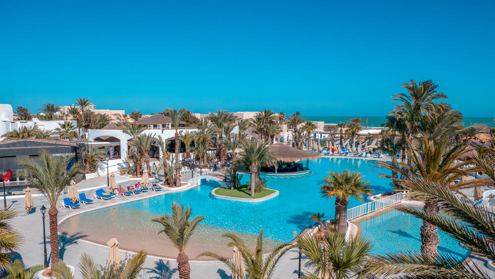

Djerba is Tunisia’s most famous island, known for its sandy beaches, white villages, and exceptional cultural diversity.
It has long been a crossroads of civilizations and religions.
~165,000 inhabitants
3,750 km²
- El Ghriba Synagogue (one of the oldest in the world)
- Houmt Souk
- Guellala pottery village
- Beaches and lagoons
- Djerbian fish dishes
- Seafood couscous
- Traditional island bread
Tataouine
Desert Landscapes and Ksour
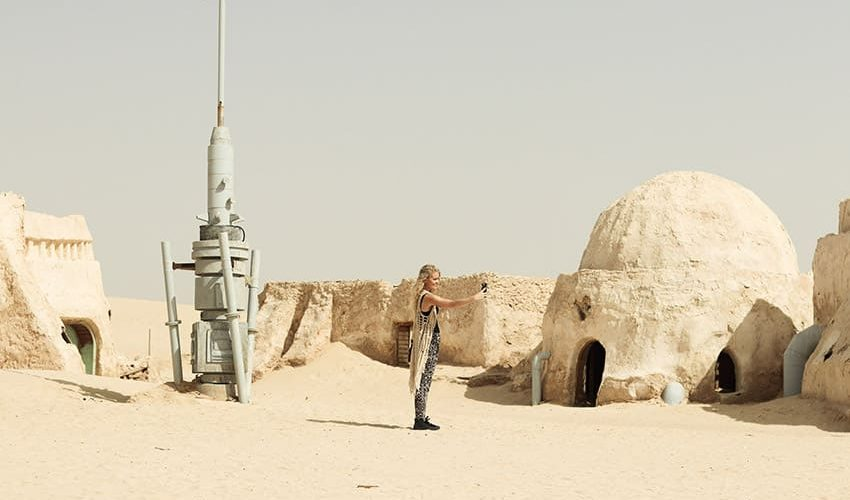

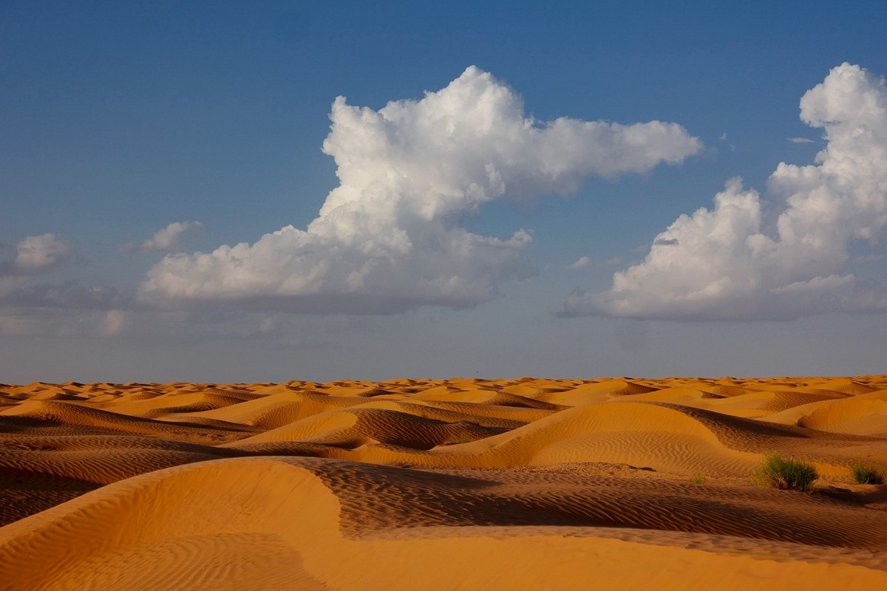
Tataouine is a vast desert governorate famous for its ksour, troglodyte villages, and lunar landscapes.
It inspired the fictional planet “Tatooine” in Star Wars.
~149,000 inhabitants
38,889 km²
- Ksar Hadada
- Chenini village
- Douiret village
- Sahara Desert landscapes
- Berber couscous
- Oven-baked bread
- Herbal desert tea
Kébili
Gateway to the Sahara
Kébili is a desert governorate marking the entrance to the Sahara.
It is deeply connected to nomadic traditions, oases, and desert tourism.
~157,000 inhabitants
22,454 km²
- Douz (Sahara Festival)
- Ksar Ghilane oasis
- Sand dunes and desert camps
- Chatt el Jérid
- Camel couscous
- Deglet Nour dates
- Tabouna
Tozeur
Capital of the Oases


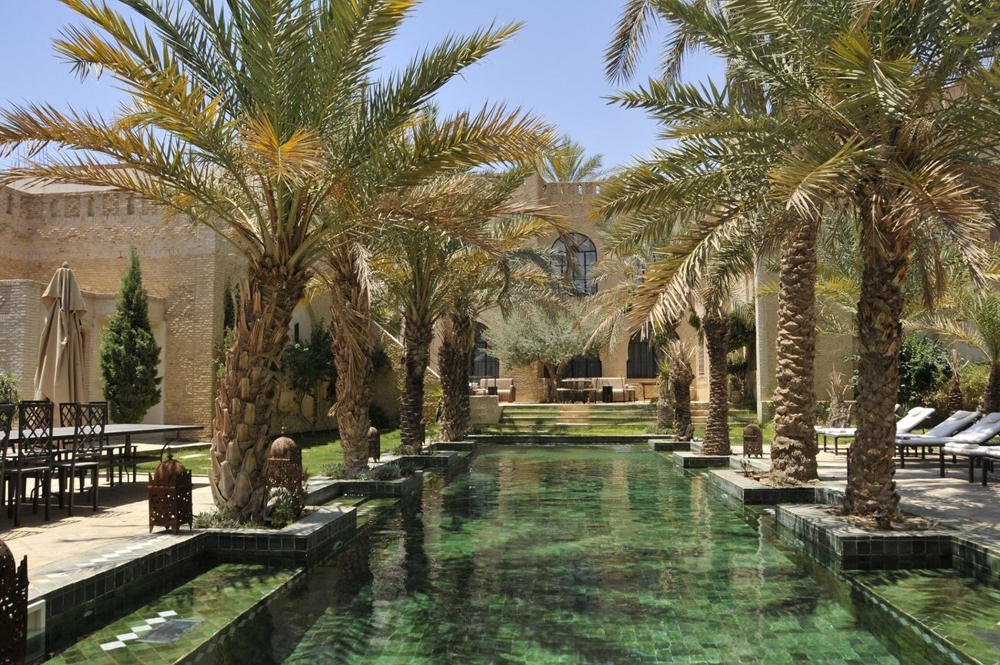
Tozeur is one of Tunisia’s most iconic desert destinations, famous for its vast palm groves, traditional brick architecture, and proximity to spectacular desert landscapes.
~108,000 inhabitants
5,593 km²
- Tozeur Oasis
- Old town (Ouled El Hadef)
- Chebika, Tamerza, Midès mountain oases
- Chatt El Jerid (salt lake)
- Deglet Nour
- Couscous with dates
- Pine nut tea
- Tabouna
Gafsa
Ancient Oases and Roman Heritage
Gafsa is a historic inland governorate known for its ancient oases, Roman remains, and mountainous landscapes.
It has been inhabited since prehistoric times and offers a unique mix of archaeology and desert-edge nature.
~337,000 inhabitants
8,990 km²
- Roman Pools of Gafsa
- Mountain oases
- Gafsa Archaeological Museum
- Prehistoric and Roman sites
- Couscous gafsi
- Mermez (traditional stew)
- Local bread and olive oil